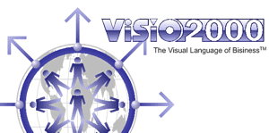
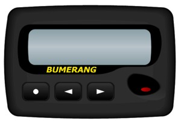
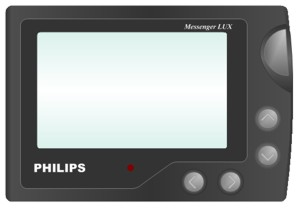
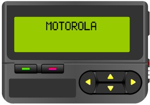
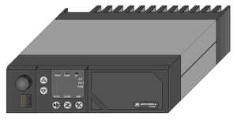
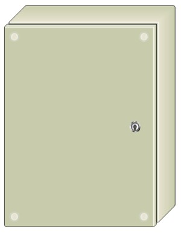
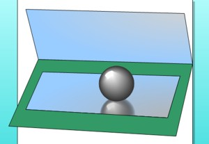
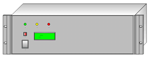
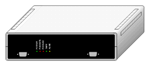
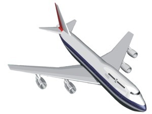
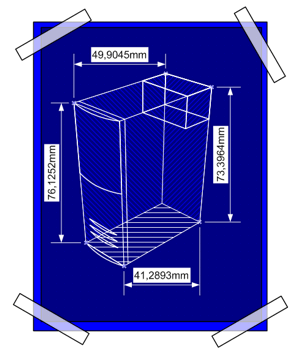
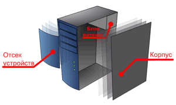
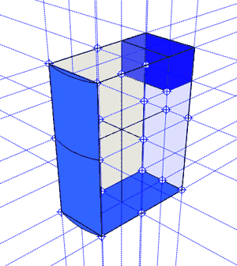
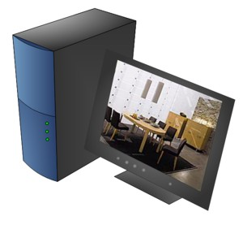
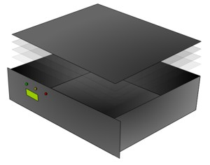
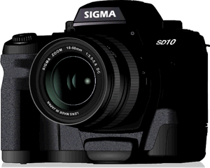
Использованные приложения: Microsoft Visio 2002, CorelDRAW 10 (подбор и векторизация шрифтов), GWColor (подбор цветов).
Время черчения: 6 часов.
Количество фигур: 90.
Создавался методом ручной сколки.
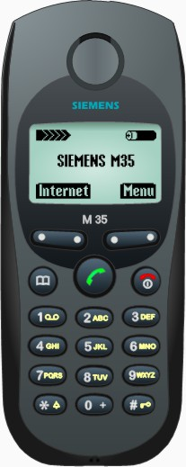
Использованные приложения: Microsoft Visio 2002, GWColor (подбор цветов).
Время черчения: 2 часа.
Количество фигур: 52.
Создавался в изометрии.

Использованные приложения: Microsoft Visio 2002, CorelDRAW 10 (подбор и векторизация шрифтов), GWColor (подбор цветов).
Время черчения: 8 часов.
Количество фигур: 283.
Создавался методом ручной сколки. В работе использовались приемы создания градиентных заливок дугой (между кнопками).
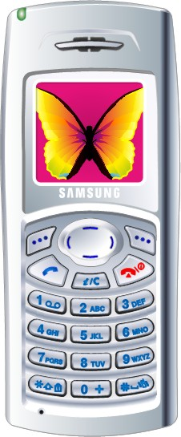
Использованные приложения: Microsoft Visio 2002, DotColor 3.0 (подбор цветов).
Время черчения: 2 часа.
Количество фигур: 400.
В работе использовались приемы несимметричной шаблонной заливки.
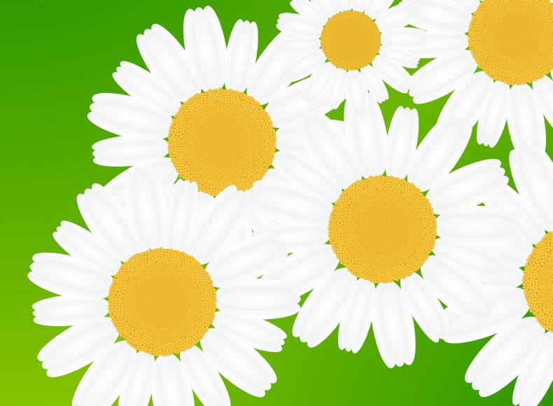
Использованные приложения: Microsoft Visio 2002, DotColor 3.0 (подбор цветов).
Время черчения: 2 часа.
Количество фигур: 65.
Создавался методом ручной сколки. В работе была сделана нормальная векторная тень.
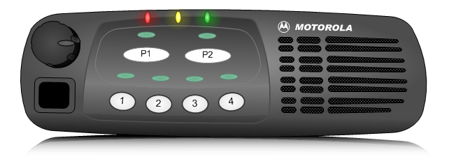
Использованные приложения: Microsoft Visio 2003, DotColor 3.0 (подбор цветов).
Время черчения: 7 часов.
Количество фигур: 234.
Создавался методом ручной сколки.
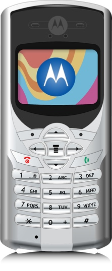
Использованные приложения: Microsoft Visio 2003, DotColor 3.0 (подбор цветов).
Время черчения: 4 часа.
Количество фигур: 176.
Создавался методом ручной сколки. Самый сложный элемент - колесные диски. Они сложной формы и на них ушел почти час.
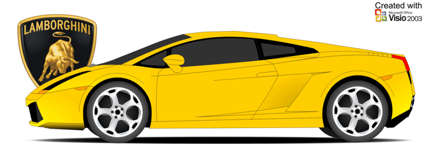
Использованные приложения: Microsoft Visio 2003, DotColor 3.0 (подбор цветов).
Время черчения: 14 часов.
Количество фигур: 168.
Создавался методом ручной сколки.
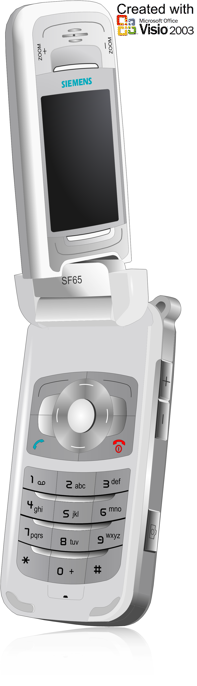
Использованные приложения: Microsoft Visio 2003, Corel Photo-Paint (подбор цветов).
Время черчения: 3 часа.
Количество фигур: 671.
Создавался методом ручной сколки. В данной работе был придуман векторный вариант металла обработанного пескоструйным аппаратом.
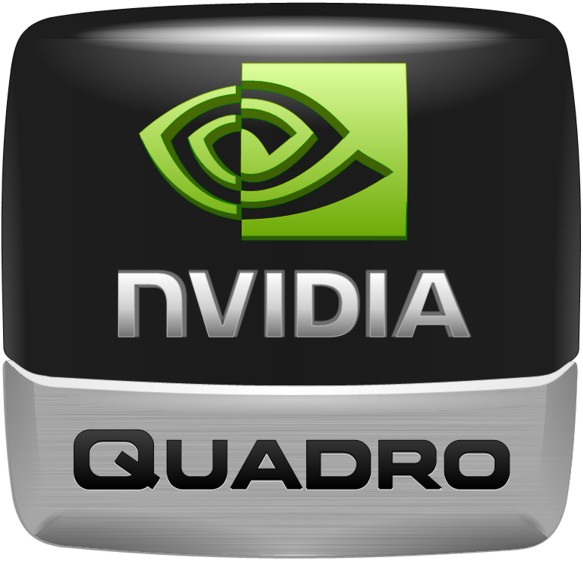